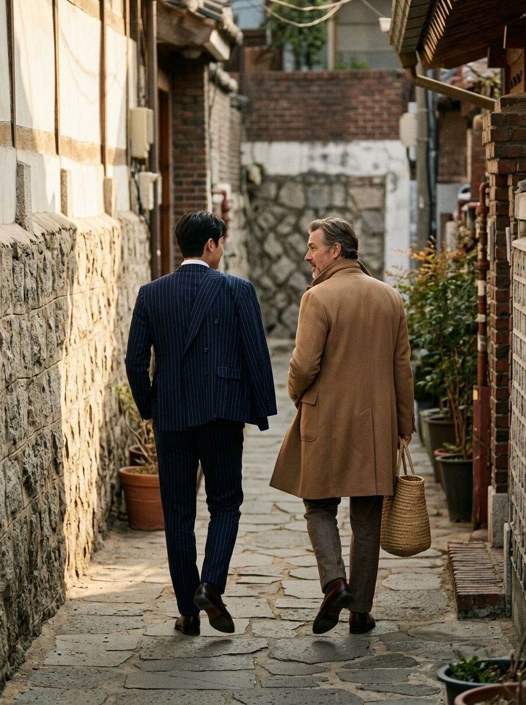

002 RL Purple / S5
17:00 · TELEPHOTO SNAPSHOT
Alley Walk
성북동 골목에서 두 남자가 걸으며 대화하는 장면. 정지 포즈가 아니라 보행 주기의 한 순간을 잡습니다.

| 검사축 | 기준 |
|---|---|
| 보행 | 앞발 착지와 뒷발 이탈, 골반 회전, 팔의 반대 흔들림이 연결될 것 |
| 렌즈 | 85mm 망원 압축, 배경과 인물이 붙되 실루엣은 분리될 것 |
| 관계 | 한 사람이 말하며 몸을 조금 돌리고 다른 사람은 듣는 표정 |
| 텍스트 | 간판·차량번호·임의 문자를 식별 가능하게 만들지 않을 것 |